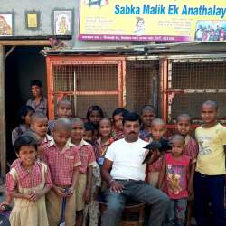
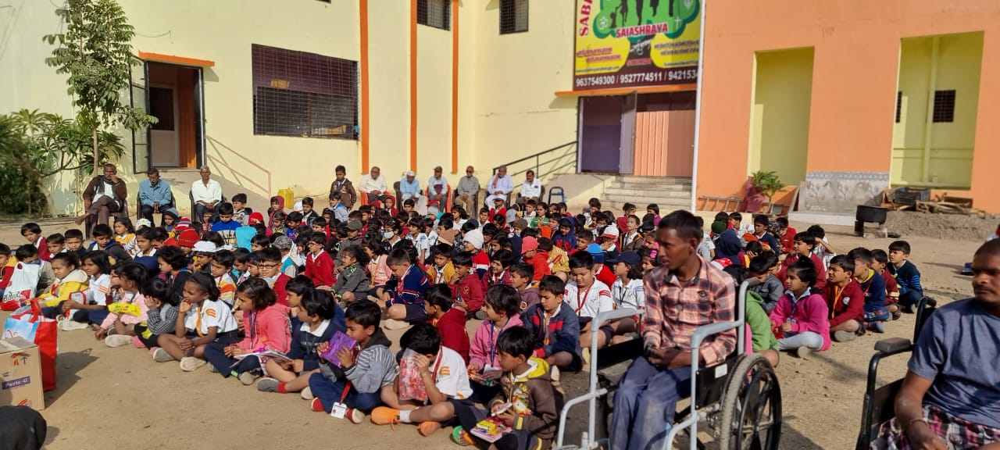
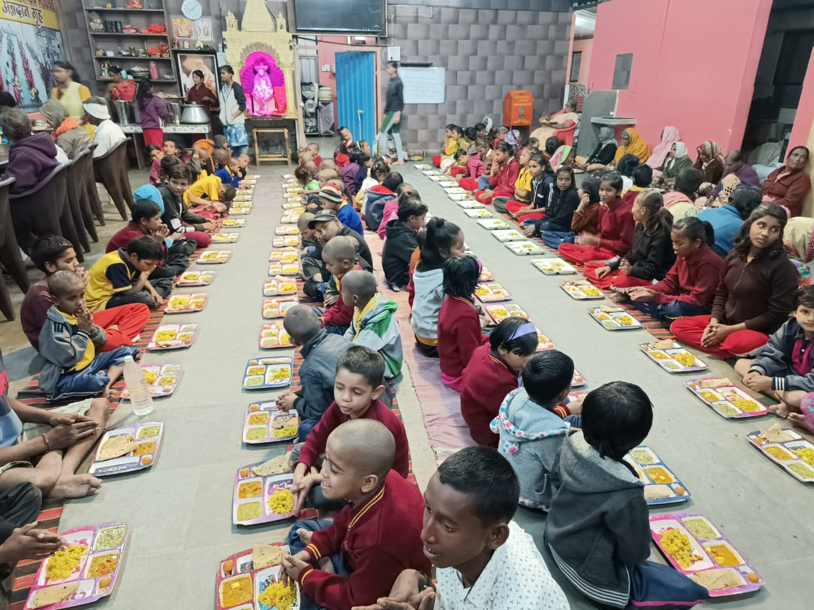
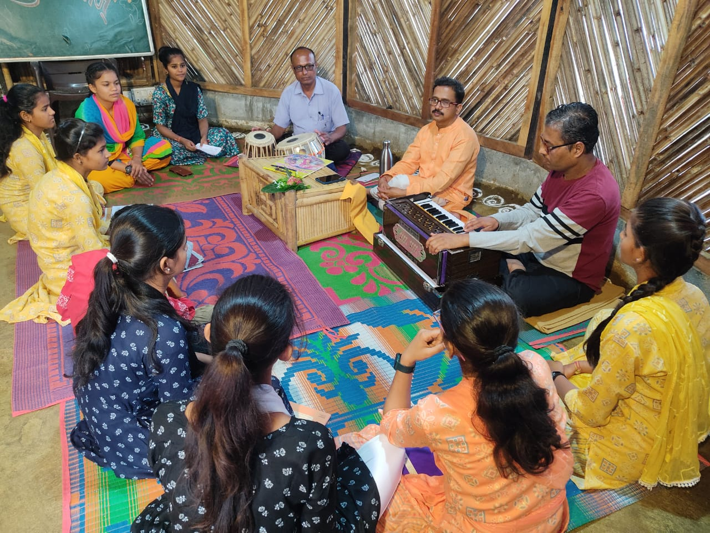

Children
Supporting children's care, well-being and opportunities for a brighter future.
SaiAshraya Family, based in Shirdi, Maharashtra, works to support orphaned children, destitute women, elderly people and others who need care. Discover its story and learn how you can help.
Care, compassion and support can help people build a more secure and hopeful future.
Supporting children's care, well-being and opportunities for a brighter future.
Promoting dignity, care and support for women experiencing difficult circumstances.
Encouraging compassion, companionship and care for older people.

SaiAshraya Family, based in Shirdi, Maharashtra, works to support orphaned children, destitute women, elderly people and others who need care.
Explore the organization's story, learn about its activities and discover how you can contribute to its mission.
Visit the Official Website →Discover updates and stories about SaiAshraya through its official online channels.
Visit the official website to learn more about the organization and its work.
Explore the Website →Find videos and stories about SaiAshraya using YouTube search.
Find Videos →Check the organization's official channels for announcements, activities and recent information.
View Official Information →A glimpse into SaiAshraya Family and its activities.



Visit the official SaiAshraya donation page to learn how you can support its work.
Visit Donation Page →Visit the official website for verified contact information and ways to get involved.
Organization:
SaiAshraya Family
Location:
Shirdi, Maharashtra, India
Website:
saiashrayaorphanage.com
Please use the official website to confirm contact details.
Learn about the organization's activities and discover appropriate ways to contribute.
You can visit the official donation page for more information.
Explore Ways to Help →